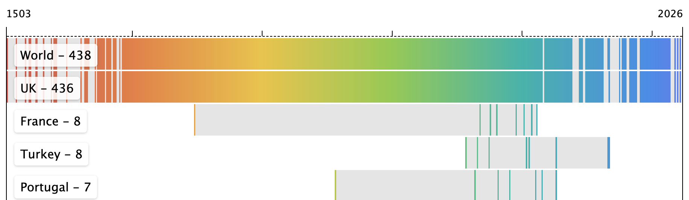
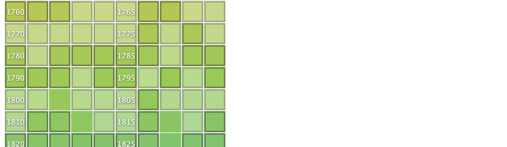

Idea
Back in 2022, I came up with the idea for a perfect collection. A collection of buildings that feature the year of their (re)construction visible on their facades.
- It's digital, so there is no need to worry about physical storage.
- The total number of possible items in the collection grows by exactly 1 each year.
- One can find items for the collection almost anywhere in the world.
- I can build the collection from home thanks to Google Street View and heritage registers like Historic England.
- It also serves as a fantastic extra motivation for travelling (on both a macro and micro scale).
So, this is my perfect collection.
Navigation
Top-level pages provide an overview of the collection's items in specific countries, administrative regions, or cities. Each region is represented by a timeline that starts with the earliest year-item in the collection and ends with the latest.

Detailed statistics are available when you click on any of the rows. These include:
- Years in the region's collection, broken down by decades.
- A link to a map with all regional items tagged.
- The total number of years in the region's collection.
- Buildings listed in heritage registries (indicated by a dark border in the table).
- The number of places physically visited (those not yet visited appear hazy).

If you click on any specific year square, you will see links to the map and Google Street View, a couple of photos (if visited), and a link to its heritage registry entry (e.g., Historic England).
Current state
The collection has grown significantly since 2022. Incorporating data from Historic England gave a massive boost to the number of items in England from the 16th to the 19th centuries. However, there are still quite a few gaps in the 20th century, as well as the most recent decade. I would greatly appreciate any help filling these - feel free to reach out to me on Instagram!
My other main focus right now is visiting every item I've found through research. Here is the list of routes for my bike trips to give you an idea. It might take a couple dozen years with my current pace, though.